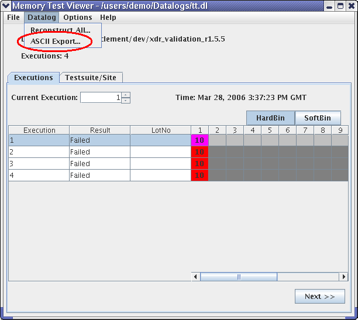
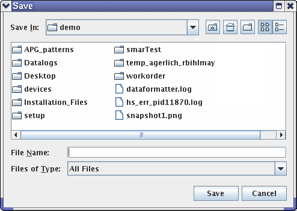

ASCII export
To export all of the data log file into a ASCII text file (displayable with a text editor instead of the BFM viewer):
- In the Viewer window, choose :

A standard save file dialog opens allowing you to define the path for the exported ASCII file.

- Select the destination folder for the export file.
- Click Save.
A progress dialog window is displayed and shows a progress bar. When the export process is successfully finished, the progress dialog is closed and a message box is displayed.